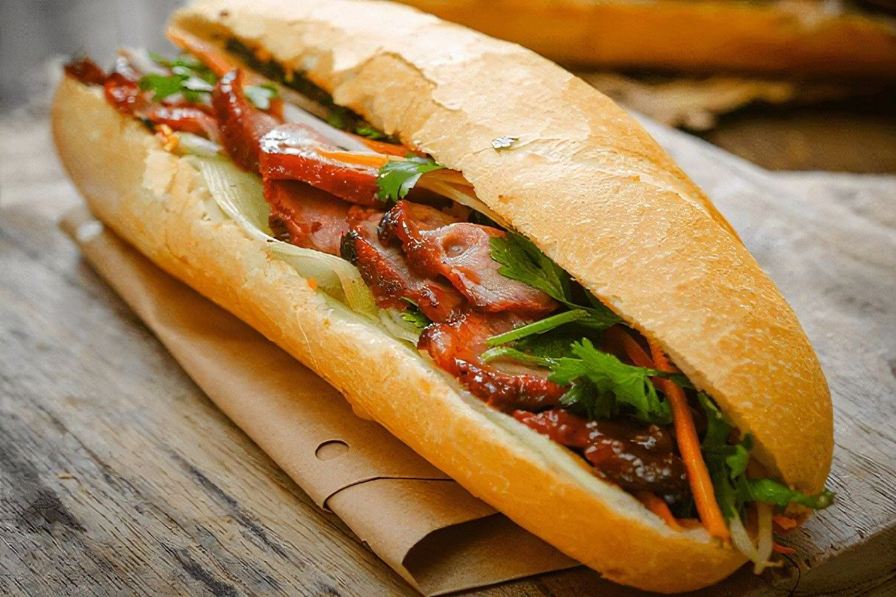
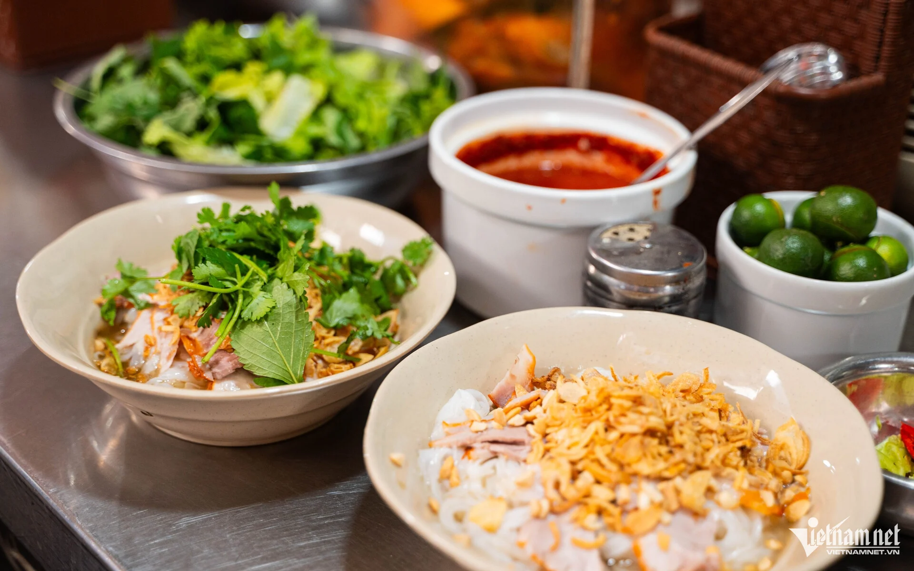
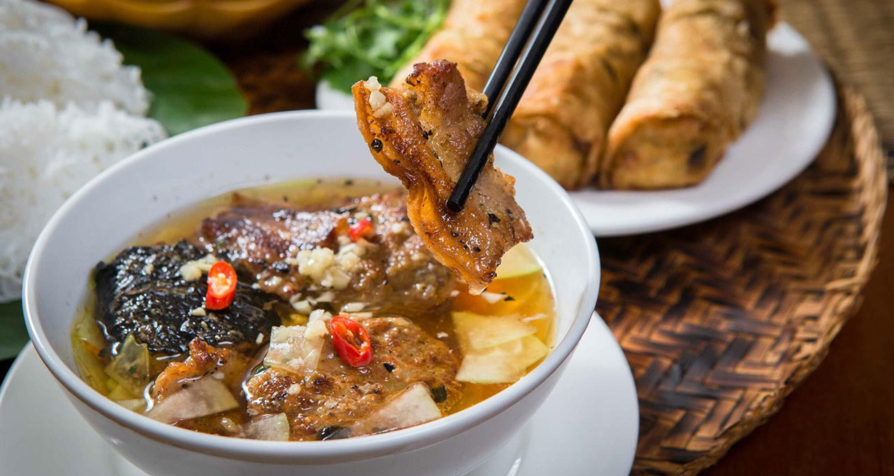
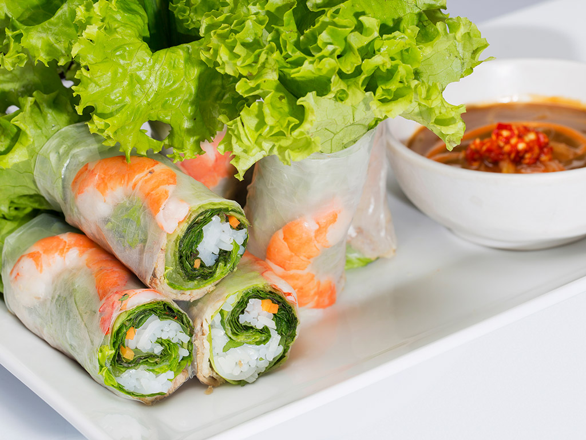
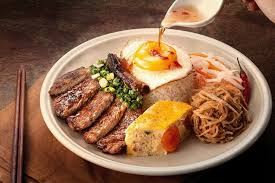

Delicious Vietnamese Cuisine
Banh Mi
Bánh Mì is Vietnam's famous street-food sandwich. It uses a crispy French baguette filled with a savory mix of meats, pâté, fresh cucumber, cilantro, and pickled carrots. A splash of chili sauce balances the flavors, creating a perfect blend of crunchy, savory, and fresh in every bite.

Pho
Phở is the ultimate Vietnamese comfort food and the national dish. It is a fragrant rice noodle soup made from a rich, slowly simmered broth filled with spices like star anise and cinnamon. Served with tender slices of beef or chicken and fresh herbs, it is eaten for breakfast, lunch, or dinner.

Bun Cha
Originating from Hà Nội, Bún Chả features flavorful, smoky grilled pork patties and pork belly swimming in a warm, sweet-and-sour dipping sauce. It is served alongside a plate of soft white rice noodles and a mountain of fresh green herbs, creating a delicious and filling meal.

Goi Cuon
Gỏi Cuốn is a healthy and refreshing appetizer. These fresh rolls pack boiled shrimp, pork slices, soft rice noodles, and crispy herbs tightly inside a transparent sheet of rice paper. They are served cold and dipped into a rich, sweet peanut sauce.

Com Tam (Broken Rice)
Cơm Tấm is a beloved staple of Southern Vietnam. The dish uses fractured rice grains topped with a perfectly marinated grilled pork chop, a steamed egg meatloaf, and a fried egg. It is finished with a drizzle of sweet fish sauce and green onion oil.
